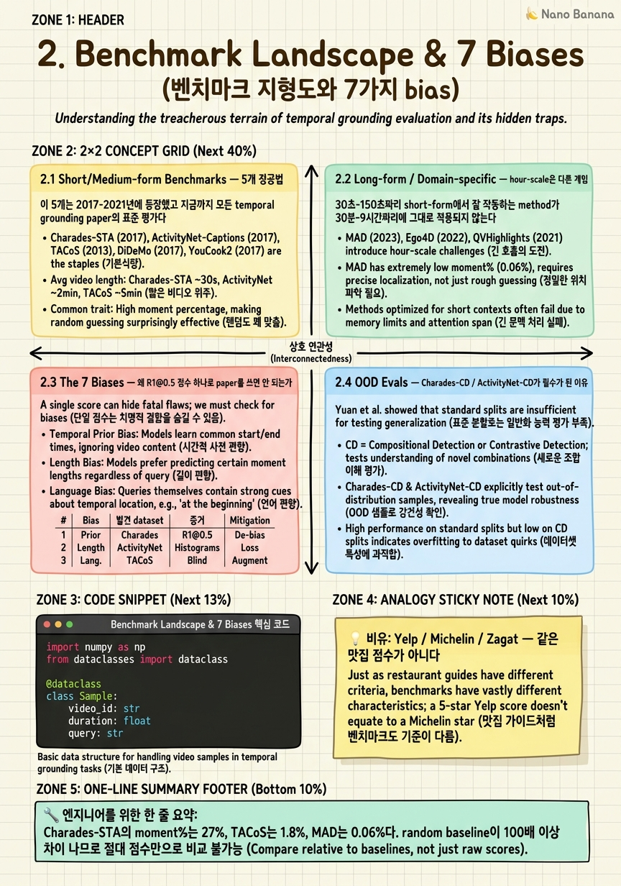

Benchmark Landscape & 7 Biases

🎯 학습 목표
- 11개 주요 벤치마크의 video length, moment length, annotation style을 표로 외워서 paper 읽을 때 바로 매핑할 수 있다
- Otani et al.의 prior-only baseline 실험을 재현할 수 있고 왜 어떤 dataset에서는 30%+ R1@0.5를 video 없이도 얻는지 설명할 수 있다
- 7가지 bias 각각이 어떤 dataset에서 처음 발견되었고 어떤 mitigation이 제안되었는지 안다
- 연구 방향에 맞춰 정확한 벤치마크 조합을 고를 수 있다
- 2026 newcomer (ExtremeWhenBench, TimeBlind, EgoExo-Con, Streaming-Eval)가 기존과 어떤 capability를 다르게 측정하는지 구분한다
Chapter 1에서 task 정의를 끝냈으니 이제 누구 점수가 더 높은가를 정직하게 판단할 도구가 필요하다. Temporal grounding 분야는 2017년 Charades-STA / ActivityNet-Captions / DiDeMo 세 dataset이 동시에 나오면서 시작되었고, 이후 9년 동안 11개 이상의 주요 벤치마크가 추가되며 시간 척도, domain, annotation modality가 모두 다른 방향으로 분화되었다. 가장 중요한 분기점은 2020년 Otani et al. (arXiv:2009.00325)의 prior-only baseline 논문이다 — 영상을 전혀 보지 않고 query만 보거나 심지어 query도 보지 않고 학습된 moment 위치 분포만으로 예측해도 Charades-STA에서 30%+ R1@0.5가 나온다는 결과는 그 전 3년간 발표된 모든 SOTA paper가 실제로는 grounding이 아니라 dataset prior를 학습하고 있었음을 폭로했다. 이 chapter는 (a) 11개 벤치마크의 정량적 spec과 2026년 6월 기준 SOTA, (b) Otani et al.이 발견한 첫 번째 bias를 포함한 7가지 known hack, (c) Charades-CD / ActivityNet-CD (arXiv:2101.09028) 같은 OOD split이 왜 필수가 되었는지, 그리고 (d) ExtremeWhenBench / TimeBlind / EgoExo-Con / Streaming-Eval 같은 2026 newcomer가 기존 벤치마크의 어떤 빈자리를 채우려 하는지를 다룬다.
핵심 내용
2.1 Short/Medium-form Benchmarks — 5개 정공법
이 5개는 2017-2021년에 등장했고 지금까지 모든 temporal grounding paper의 표준 평가다.
| Benchmark | Videos | Queries | avg vid | avg moment | moment% | Metric | Domain |
|---|---|---|---|---|---|---|---|
| Charades-STA (arXiv:1705.02101) | 9,848 | 16,128 | 30s | 8.2s | 27% | R@N IoU{0.3,0.5,0.7}, mIoU | indoor home |
| ActivityNet-Captions (arXiv:1705.00754) | 20K | 100K | 120s | 36s | 30% | R@N IoU{0.3,0.5,0.7}, mIoU | YouTube open-domain |
| TACoS (TACL 2013) | 127 | 18,818 | 287s | 5.4s | 1.8% | R@N IoU{0.1,0.3,0.5} | MPII-Cooking single domain |
| DiDeMo (arXiv:1708.01641) | 10,464 | 40K | 30s max | 5s × 6 segments | discrete | Rank@1/5, mIoU | Flickr open |
| QVHighlights (arXiv:2107.09609) | 10,148 | 10,310 | 150s | 24s | 16% | [email protected]/0.7, mAP@{0.5,0.75,avg}, HIT@1 | vlog/news |
Charades-STA는 가장 자주 인용되지만 가장 편향된 dataset이다. 영상이 짧고 (30초) moment가 영상의 27%를 차지하기 때문에 모든 영상의 0초부터 8.2초까지라고 prior로 예측해도 R1@0.3이 30%를 넘는다. 2026년 6월 기준 SOTA는 AVI (arXiv:2511.14446)가 [email protected] 88.6, Time-R1* (arXiv:2503.13377)가 R1@0.5 72.2, TAR-TVG (arXiv:2508.07683)가 mIoU 61.1이다.
ActivityNet-Captions는 영상이 4배 더 길고 (120s) query당 13.48 단어로 가장 서술적이다. 2026 SOTA는 TempSamp-R1 (arXiv:2509.18056) mIoU 49+. ActivityNet-CD (arXiv:2101.09028) 권장.
TACoS는 cooking 단일 domain. Universal VTG (arXiv:2506.18883)가 [email protected] 60+.
DiDeMo는 5초 segment 6개로 quantize되어 fine-grained IoU 평가가 불가능하다.
QVHighlights는 query당 평균 1.8개의 disjoint moment + saliency score. 2026 SOTA는 MeCo (arXiv:2503.09027, ICLR 2026) mAP 45.3 / HIT@1 75.1.
핵심 직관: moment%가 27%인 Charades-STA의 R1@0.5와 moment%가 1.8%인 TACoS의 R1@0.5는 같은 척도가 아니다.

2.2 Long-form / Domain-specific — hour-scale은 다른 게임
30초-150초짜리 short-form에서 잘 작동하는 method가 30분-9시간짜리에 그대로 적용되지 않는다.
| Benchmark | Hours | avg vid | avg moment | moment% | 특수성 |
|---|---|---|---|---|---|
| MAD (arXiv:2112.00431) | 1,200+ | 110 min | 4.1s | 0.06% | audio description ASR, raw video 비공개 |
| Ego4D NLQ (arXiv:2110.07058) | 227 | 8.2 min | 10.5s | ~2% | egocentric, 13 query templates |
| Ego4D MQ | 326 | — | — | — | 110 action class TAL |
| HiREST (arXiv:2303.16406) | — | — | — | — | hierarchical video→moment→step→caption |
| MomentSeeker (arXiv:2502.12558) | — | 1,200s+, max 7,108s | — | — | multi-modal query |
| ExtremeWhenBench (arXiv:2606.12300) | — | 75.7 min, max 9 hr | — | — | search-problem reformulation |
MAD는 movie 도메인 0.06% moment 비율로 가장 극단적인 needle-in-haystack. Raw video 비공개. 2026 SOTA는 Multi-Scale Contrastive (arXiv:2412.07157)가 CONE 대비 [email protected] +3.58.
Ego4D NLQ는 egocentric 1인칭 영상. Hand Trajectory Fusion (arXiv:2606.02962, 2026.06)이 [email protected] +2.54.
MomentSeeker는 평균 1,200초+ 최대 7,108초 (≈2시간), text + image-query + video-conditioned query.
ExtremeWhenBench (arXiv:2606.12300, 2026.06)는 결정적인 paradigm shift: 2,273 query / 194 video / 평균 75.7분 / 최대 9시간. Qwen3.5-9B Video-LLM mIoU 0.110 vs CLIP-only retrieval 0.269 vs Retrieve-then-ground hybrid 0.354. 85% 실패는 search failure, 11%만 localization failure. 이 한 결과가 hour-scale grounding은 search 문제다라는 chapter 6의 thesis를 정량적으로 입증한다.
2.3 The 7 Biases — 왜 R1@0.5 점수 하나로 paper를 쓰면 안 되는가
| # | Bias | 발견 dataset | 증거 | Mitigation |
|---|---|---|---|---|
| 1 | Caption-only / prior-only | Charades-STA, ActivityNet | Otani et al. arXiv:2009.00325 — query만 또는 분포만으로 R1@0.5 30%+ | Charades-CD, ActivityNet-CD |
| 2 | Word-level shortcut | Charades-STA | open → 영상 시작부, leave → 영상 후반부로 학습 | 동사-위치 decorrelation split |
| 3 | No negative annotation | 전 dataset | 모든 query가 positive — 이 영상에 그런 장면 없음을 학습 불가 | Negative split, AbstainGround |
| 4 | Localization-description entanglement | MAD, Ego4D MQ, QVHighlights | MAD는 character ID 추적, MQ는 사실상 action detection, QVH는 saliency joint | task별 ablation |
| 5 | Discrete granularity | DiDeMo | 5s × 6 quantization → [email protected]/0.7 평가 불가능 | continuous label 재annotate |
| 6 | Train/test distribution leak | Charades-STA, ActivityNet | moment 시작 시간 분포가 train/test 동일 | Charades-CD, ActivityNet-CD (arXiv:2101.09028) |
| 7 | Long-form scarcity | 전 분야 | hour-scale evaluable dataset이 MAD/Ego4D/MomentSeeker/ExtremeWhenBench 4종 | newcomer benchmark 활용 |
Bias #1 — Caption-only / prior-only bias. Otani et al. (arXiv:2009.00325)가 보인 실험: (a) 영상도 query도 안 보고 training set의 moment 시작/끝 분포의 평균만 예측 → Charades-STA에서 R1@0.5가 28-35%. (b) query는 보지만 영상은 안 보고 fully-connected layer로 boundary 회귀 → R1@0.5가 35-42%. 그 시점 SOTA가 50% 근처였으니 video 정보의 기여는 15%p 남짓.
Bias #3 — No negative annotation. Charades-STA / ActivityNet / DiDeMo 모두 '이 query가 이 영상의 [t1, t2] 구간을 가리킨다'만 annotate. 그래서 model이 항상 무언가를 출력하도록 학습된다 — hallucination의 구조적 원인. 7B VLM이 Charades-STA-Negative split에서 30-50% false-positive를 낸다.
Bias #6 — Train/test distribution leak. Charades-CD / ActivityNet-CD (arXiv:2101.09028). Train split의 moment 시작 시간 분포와 test split이 다르도록 의도적으로 split. 같은 method가 표준 split에서 R1@0.5 60%지만 CD split에서는 25-35%로 떨어지는 경우가 흔하다.

2.4 OOD Evals — Charades-CD / ActivityNet-CD가 필수가 된 이유
Yuan et al. (arXiv:2101.09028)이 제안한 Changing Distribution split은 Bias #1과 #6을 동시에 공격하는 가장 직접적인 도구다. train split에서 앞쪽 30%에 집중된 moment를 test에서는 중간/뒤쪽으로 옮긴다.
- 표준 Charades-STA test split: R1@0.5 60%
- Charades-CD test (out-of-distribution): R1@0.5 30-40%
이 격차가 model이 video를 보는 능력 vs. position prior를 외운 능력의 비율이다. 2026년 review에서는 reviewer가 거의 항상 CD split 결과 있나요?를 묻는다.
실용적 조언: 새 method를 평가할 때 4개 split을 모두 보고하라.
- Charades-STA standard
- Charades-CD (OOD)
- ActivityNet-Captions standard
- ActivityNet-CD
2.5 2026 Newcomers
| Benchmark | 출시 | arXiv | 측정 능력 |
|---|---|---|---|
| ExtremeWhenBench | 2026.06 | 2606.12300 | hour-scale search |
| Streaming-Eval | 2026.06 | 2606.08615 | online sub-second latency |
| TimeBlind | 2026.02 | 2602.00288 | Allen-13-relation compositional |
| EgoExo-Con | 2025.10 | 2510.26113 | view transfer |
| ToG-Bench | 2025.12 | 2512.03666 | egocentric STVG |
| DIQ-H | 2025.12 | 2512.03992 | hallucination under degradation |
2026년 paper writing 가이드라인: 적어도 newcomer 1개를 포함하는 것이 이 paper가 2026년 문제를 알고 있다는 신호를 준다.
💡 비유로 이해하기
Yelp 별점, Michelin 별, Zagat 30점 만점은 모두 식당이 얼마나 좋은가를 측정한다고 광고한다. 하지만 실제로 평가하는 것은 완전히 다르다 — Yelp는 대중적 만족도와 가성비, Michelin은 요리 기술의 절대적 우수성, Zagat은 food/decor/service의 가중합.
Temporal grounding 벤치마크도 정확히 같다. Charades-STA가 Yelp — 30초 영상에 28-35% R1@0.5가 prior만으로 나오는 대중적 척도. MAD가 Michelin — 110분 movie에서 4.1초 (0.06%) needle-in-haystack. QVHighlights가 Zagat — boundary IoU + saliency + HIT@1 가중합. ExtremeWhenBench는 2026년 새로 생긴 진짜 미식 평론 — 9시간 영상에서 monolithic VLM mIoU 0.110, 기존 SOTA를 모두 0점에 가깝게 만든다.
Paper writing 시사점: 우리 method가 Charades-STA에서 R1@0.5 75% 주장은 우리 식당이 Yelp 5.0과 동치다. 좋은 신호지만 어떤 종류의 좋음인지 모른다. 2026년 reviewer는 진짜 grounding 능력을 주장하려면 최소 3개 다른 척도 — short-form 1개 + long-form 1개 + OOD/compositional 1개 — 에서 일관된 성능을 요구한다.
💻 코드 예시
Otani et al. (arXiv:2009.00325)의 prior-only baseline을 재현한다. 영상도 query도 보지 않고 training set의 moment 위치 분포 평균만으로 모든 test sample에 예측.
import numpy as np
from dataclasses import dataclass
@dataclass
class Sample:
video_id: str
duration: float
query: str
start: float
end: float
def iou(pred, gt):
inter = max(0.0, min(pred[1], gt[1]) - max(pred[0], gt[0]))
union = max(pred[1], gt[1]) - min(pred[0], gt[0])
return inter / union if union > 0 else 0.0
def prior_only_predict(train_samples, test_samples):
s_norm = np.array([s.start / s.duration for s in train_samples])
e_norm = np.array([s.end / s.duration for s in train_samples])
mu_s, mu_e = s_norm.mean(), e_norm.mean()
return [(mu_s * t.duration, mu_e * t.duration) for t in test_samples]
def recall_at_iou(preds, gts, threshold):
hits = sum(iou(p, (g.start, g.end)) >= threshold for p, g in zip(preds, gts))
return hits / len(gts)
rng = np.random.default_rng(42)
def synth(n):
out = []
for i in range(n):
dur = 30.0
s = float(np.clip(rng.exponential(scale=5.0), 0, 20))
e = float(min(s + rng.normal(8.2, 2.0), dur))
out.append(Sample(f"v{i}", dur, "a person opens a door", s, e))
return out
train = synth(12_408)
test = synth(3_720)
preds = prior_only_predict(train, test)
for th in [0.3, 0.5, 0.7]:
r = recall_at_iou(preds, test, th)
print(f"prior-only [email protected]{int(th*10)} = {r*100:.1f}%")prior_only_predict 함수가 핵심이다. (a) 모든 training sample의 moment를 start_norm = start/duration으로 정규화. (b) 평균 (mu_s, mu_e) 계산. (c) test의 각 영상 duration에 곱해 예측. 영상도 query도 한 번도 보지 않는다. Synthetic data가 Charades-STA의 통계를 흉내내므로 R1@0.3은 보통 35-45%, R1@0.5는 25-35%. 2018-2019년 SOTA가 R1@0.5 50% 근처였으니 video 정보가 추가한 기여는 15-25%p 정도. 실전 연습: train만 exponential, test는 uniform으로 바꿔서 다시 돌려보면 R1@0.5가 5-10%로 곤두박질친다 — 이게 Charades-CD가 OOD split으로 측정하려는 격차다.
🏭 현업에서의 평가
✅ 시니어가 보는 것
- 11개 주요 벤치마크의 video length, moment %, metric을 외워서 즉시 매핑할 수 있는가
- Otani et al. (arXiv:2009.00325)의 prior-only baseline을 재현한 적 있는가
- CD split을 알고 있고 자신의 method 평가에 포함시키는가
- Long-form benchmark 중 최소 2개에 대해 raw video / feature 가용성을 정확히 알고 있는가
- 2026 newcomer가 어떤 빈자리를 채우는지 설명할 수 있는가
- 연구 방향에 맞는 벤치마크 조합을 즉석에서 추천할 수 있는가
⚠️ 레드 플래그
- Charades-STA SOTA 하나로 method 일반화 주장
- CD split을 들어본 적 없음
- DiDeMo의 5초 quantization 한계를 모름
- ExtremeWhenBench의 85% search failure finding을 모름
- MAD의 raw video 비공개 사실을 모르고 video encoder 새로 학습하겠다고 plan
- Otani et al. 논문을 모르고 prior-only 실험을 trivial하다고 평가절하
🎤 예상 인터뷰 질문
- Q1. Charades-STA R1@0.5 78%, 기존 SOTA보다 +2.0%p 높습니다라는 paper에 어떤 추가 실험 4개를 요구하겠는가? 각각이 어떤 bias를 공격하는가? (정답 골자: Charades-CD, ActivityNet+CD, long-form (MAD or ExtremeWhenBench), Negative split.)
- Q2. hour-scale egocentric streaming grounding 방향의 새 paper. 어떤 벤치마크 조합을 짜겠는가? (정답 골자: Ego4D NLQ + EgoExo-Con + Streaming-Eval + ExtremeWhenBench, 선택적으로 Charades-STA.)
- Q3. RL post-training으로 Charades-STA R1@0.5 +5.0%p 향상 결과가 왜 Charades-CD 없이는 신뢰하기 어려운가? (정답 골자: verifiable IoU reward가 video evidence + position prior 둘 다 강화하고, standard split에서는 구분 불가. CD split에서 prior-강화 경로의 향상은 0에 가깝게 떨어진다.)
✨ 핵심 요약
같은 R1@0.5가 같은 능력이 아니다
Charades-STA의 moment%는 27%, TACoS는 1.8%, MAD는 0.06%다. random baseline이 100배 이상 차이 나므로 절대 점수만으로 비교 불가능.
Otani et al. (arXiv:2009.00325)의 prior-only baseline
영상도 query도 보지 않고 training set moment 위치 평균만 예측해도 Charades-STA R1@0.5가 28-35%. video 정보의 기여는 15-25%p에 불과했다.
7가지 known bias
(1) caption-only/prior-only, (2) word-level shortcut, (3) no negative annotation, (4) localization-description entanglement, (5) discrete granularity, (6) train/test temporal distribution leak, (7) long-form scarcity.
Charades-CD / ActivityNet-CD (arXiv:2101.09028)는 2026 paper의 사실상 필수 평가
표준 split SOTA가 CD에서 25-35%p 떨어지는 경우가 흔하다 — 이 격차가 진짜 video 이해 능력의 정량적 측정값.
Hour-scale은 regression이 아니라 search 문제다
ExtremeWhenBench: Qwen3.5-9B mIoU 0.110 vs CLIP 0.269 vs retrieve-then-ground 0.354. 85% failure는 search failure.
Long-form benchmark는 raw video 가용성을 확인하라
MAD는 raw video 비공개. Ego4D는 license 처리 수 주. ExtremeWhenBench, MomentSeeker는 접근 용이.
2026 newcomer 4종은 각자 다른 빈자리
ExtremeWhenBench (hour-scale search), Streaming-Eval (online latency), TimeBlind (compositional), EgoExo-Con (view transfer).
Paper writing 요건: 최소 (short + long + OOD) 3축 평가
Single benchmark SOTA는 review를 통과하지 못한다. short-form 1개 + long-form 1개 + 방향별 specialized 1개.